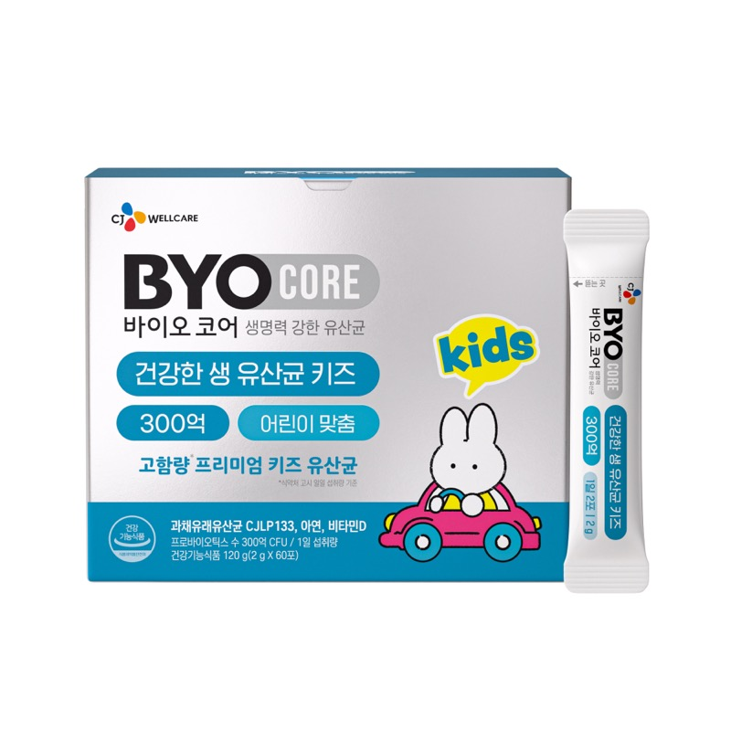
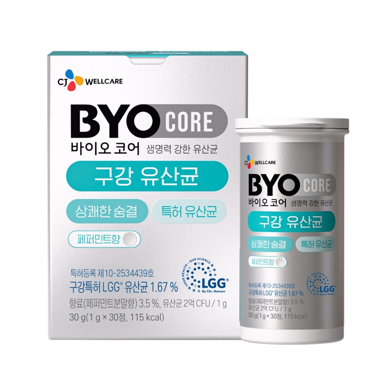
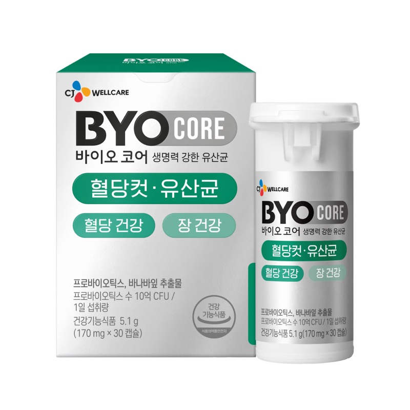

Brand Story
코어가 다른 유산균
SPECIALIST
유산균 · 장 건강 전문 브랜드
PORTFOLIO
고함량부터 고기능성까지,
필요에 맞춘 유산균 라인업
EXPERTISE
BYOCORE · Gut Health
CJ의 60년 발효기술과 20여 년의 장내 마이크로바이옴 연구.
유산균으로 시작하는 일상 속 건강 루틴.
#장건강 루틴#CJLP133#고함량유산균#기능성유산균

Brand Story
SPECIALIST
PORTFOLIO
EXPERTISE
Science Inside
CJLP133은 김치에서 유래한 Lactiplantibacillus plantarum 균주로, 식품의약품안전처로부터 ‘면역과민반응에 의한 피부 상태 개선에 도움을 줄 수 있음’의 기능성을 인정받은 개별인정형 원료입니다. 장 건강과 함께 피부 건강까지 인정받은 균주입니다.
500억
CFU · 국내 상온 최대 보장균수
장용성
캡슐로 장까지 전달
4종
비피더스균 1종 → 4종 확대

Products

장 건강 · 피부 건강
CJ더마켓에서 구매
면역과민반응에 의한 피부 상태 개선에 도움을 줄 수 있음 (식약처 인정 기능성)
CJ더마켓에서 구매
개별인정형 원료 2종 · 150억 CFU
CJ더마켓에서 구매
우리 아이 장 건강
CJ더마켓에서 구매
5070 세대 맞춤 식후 케어
출시 소식 보기
매일 가볍게 시작하는 장 건강
CJ더마켓에서 구매
입 속 유익균 케어
CJ더마켓에서 구매
식후 혈당 관리 루틴
Awards
7년 연속
2020–2026 · 중앙일보
2024
제26회 대한민국브랜드대상 우수상
2015
미래창조과학부 · BYO 유산균
2015
BYO 유산균
안내건강기능식품은 질병의 예방 및 치료를 위한 의약품이 아닙니다. 제품 정보는 기존 CJ웰케어 홈페이지와 보도자료를 인용했습니다.